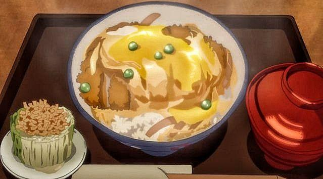

Buri Daikon
A Japanese dish of grilled yellowtail and daikon
radish. A meal that is subtly sweet, salty, and perfect
with a steaming hot bowl of rice. From Seishun Buta Yarou.
Calcifer's Breakfast
A breakfast made by Howl consisted of frying up bacon and eggs.
From the world-famous Howl's Moving Castle.
Gotcha Pork Roast

A creative dish made with creamy, seasoned
mashed potato wrapped in delicious bacon and drizzled with a rich,
red wine sauce, taken from Shokugeki no Shouma.
Ham Ramen

Elevate your ramen game with ham and soft-boiled eggs. A simple
dish from Ponyo.
Furikake Rice

Made of rice, scrambled eggs, chicken, green onions, and the
secret ingredients, gelatin cubes, this dish from Shokugeki no
Shouma is a must-try.
Pork Katsudon

An incredible comfort food dish from Yuri!!! on Ice made of rice,
eggs, onions, sauce, and deep fried pork.